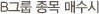

주식교실 ㅣ 주식매매
-
미수금
예수금의 2.5배 만큼 주식을 산 후 결제일에 나머지 금액을 입금하지 않으신 경우, 일단 신한금융투자가 상대 증권사에 결제를 하고 고객의 잔고에 발생시키는 미회수 금액입니다.
-
반대매매
미수가 발생한 날(결제일) 나머지 금액을 입금하지 않으시거나, 주식을 해당금액만큼 매도하지 않으시면 다음 영업일 오전 동시호가 때(9:00) 신한금융투자에서 미수금을 갚을 수 있는 금액만큼의 해당 주식을 임의로 매도할 수 있는데, 이를 반대매매라고 합니다. 미수금이 발생하면 원하지 않는 종목이나 가격으로 강제매도 당하시는 불이익이 발생할 수 있으므로 미수금 발생시에는 반드시 지점으로 확인하시기 바랍니다.

100만원 어치 매수하려면 40만원의 현금이 우선 필요합니다.
나머지 금액은 결제일 (매매 이틀 후)에 입금하시면 됩니다. 그러나 만약 결제일에 해당금액을 입금하지 않으시면 미결제금액(미수금)이 60만원 발생합니다. 그러면 증권회사는 발생한 미수금을 회수하기 위하여 고객의 계좌잔고에서 미수발생 원인의 종목을 하한가로 계산하여 60만원 어치의 주식을 시장에 매도하게 됩니다. 이 업무가 반대매매 입니다. 반대매매대상주식은 대부분 매수하신 종목이 매도되지만 고객의 의사에 따라 다른 종목을 파실 수도 있습니다. 반대매매는 미수발생일 익일 오전 8:00시에 나가게 되므로 종목을 변경 하시거나 입금을 하시려면 전일 미리 담당직원과 상의하시기 바랍니다.
- 유의사항
- 10만원 이상 미수 발생금액에 대해서 당일 매도하여 변제하거나 결제일 현금으로 입금하지 않는 경우 미수동결계좌로 지정되어 90일동안 증거금율 100%로 적용을 받으실수 있으므로 유의하시기 바랍니다.